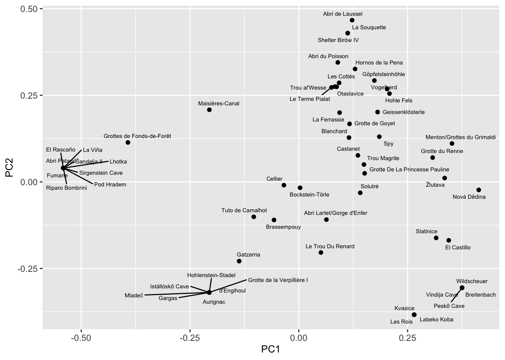

Geometric Signs on Paleolithic Mobile Objects as Cultural Group Markers
Introduction
A distinctive quality of the Upper Paleolithic is the large rise in artwork, both parietal and mobile. Archaeologists have frequently relied upon that artwork as a proxy for cultural difference in order to understand the grouping patterns of early modern humans (McDonald and Harper 2016; Pereira and Manen 2023; Fuentes, Lucas, and Robert 2019). During this period, we also see a rise in organized settlements, more complex social organizations, and more advanced tool-making across Europe (Boyd and Silk 2020). Considered to be the starting point of the Upper Paleolithic, the Aurignacian period (ca. 43,000 - 30,000 years BP) is commonly linked to the dispersal of Homo sapiens across Western Eurasia, and is characterized by certain lithic and osseus markers (Tejero and Grimaldi 2015; Tartar 2012), many of which are decorated with geometric signs (Dutkiewicz et al. 2020).
In this paper, we analyze the distribution and variation of geometric sign types found on mobile artefacts from the Upper Paleolithic in Europe during the Aurignacian period. The basis of this analysis is the idea that variations in signs can serve as an indicator of group membership and cultural similarity. This approach is supported by ethnographic and historical evidence (Texier et al. 2010; Hodder 1979, 1977; Vanhaeren 2005) as well as similar archaeological studies of ornamental and parietal art (Pereira and Manen 2023; Sauvet et al. 2018; Rigaud, d’Errico, and Vanhaeren 2015; Baker et al. 2024; Lycett 2019; Vanhaeren and d’Errico 2006; McDonald and Harper 2016). In this study, we address the following questions: Are cultural groups evident in the distribution of portable geometric signs, and if so, what can they tell us about the cultural diversity and movement of Upper Paleolithic humans?
Background
The purpose of this study is to contribute to our understanding of the patterns of cultural and genetic diversity among the early modern humans of the Upper Paleolithic. Previous works have performed cluster analysis methods upon variations in artefacts to represent and understand patterns of groups and cultural diversity, and have primarily relied upon personal ornamentation and parietal art, with few taking mobile objects into account. For example, multivariate analyses of Gravettian beads suggests an east to west cline of nine cultural groups (Baker et al. 2024). The data set consisted of 134 discrete beads types from both burial and occupation sites, as distinguished by shape and material. Seriation analysis, PCoA, and network analysis were used to identify the groups. The geographically discrete clusters identified encompassed the regions of eastern, northwestern and central Europe, the northern and southern Iberian peninsula, southern and northern Italy, and the eastern and Western Mediterranean regions. The isolation-by-distance hypothesis, which proposes that cultural difference can be primarily explained by geographic distance, is tested using a Mantel test, determining that geographic distance cannot solely account for the bead distribution.
Similar analyses (seriation, correspondence and GIS) were also performed upon personal ornament types from the Aurignacian period as a proxy for linguistic diversity. The data set consisted of 157 distinct ornament types, and the analyses identified fourteen geographically cohesive clusters sharing similar ornament type associations (Vanhaeren and d’Errico 2006). The clusters identified are geographically discrete and sweep counter-clockwise throughout western France, northern Spain, the Pyrenees, and the Mediterranean region. Availability of raw materials was considered ~in regards to~ the potential explanation that observed patterns are determined by such. ~It was concluded that, due to observed patterns in the data that countered that explanation~, [BM: They found that] the differences in personal ornamentation could not be explained by material availability.
Following the established precedent of using ornamentation and signs to identify cultural groups, we look to see if designs on mobile objects can be applicable here, and what it can add to the research being done. The additional dimension of mobility in this study allows us to potentially identify more geographically dispersed cultural groups, which might help visualize the migration patterns of early modern humans. Previous studies have primarily excluded mobile objects, and tend to find more geographically compact cultural groups as a result.
Our use of geometric signs in this study is supported by Sauvet et al. (2018), in which used quadrilateral geometric parietal signs are used to identify Upper Paleolithic cultural groups in the Cantabrian region of Spain. The authors identified and classified the signs based on variations in form, then performed a factorial correspondence analysis and ascending hierarchical clustering upon the data in order to identify two clusters, which they argued represents distinct and separate groups of humans. In their study, Sauvet et al. (2018) made a case for the relevance of signs as identity markers, pointing to both the relevant qualities of signs, which are similar to those explained above, and the case studies throughout history where they served a similar purpose.
In this paper, we test the hypothesis that cultural groups are discernible in a big data set of geometric signs on mobile objects. Firstly, we identify clusters using seriation analysis, network analysis, and PCoA. We then test the strength of the clusters using modularity, perMANOVA, and PERMDISP2 tests. Lastly, we use mantel tests to evaluate the null hypothesis of isolation-by-distance.
Methods and Materials
Data
Our data for this paper comes from SignBase, an open-access database collection of geometric signs on mobile objects from Paleolithic-era Europe, which was launched in 2020, with the explicit goal being to enable quantitative analyses of abstract geographical representation (Dutkiewicz et al. 2020). The creators of the database identified around 30 distinct geometric sign types, and recorded their occurrences on mobile artefacts from the Paleolithic. Identification and categorization of the sign types had already been performed by the creators of the SignBase database, the methods for which are described in Dutkiewicz et al. (2020), and we adhered to those categories and placements.
The data set consists of 531 artifacts found at 65 sites in 13 countries. The database records 55 geometric sign type found on these artifacts. We excluded signs if they fell under the “other” category, as the wide range of possibilities that could qualify as “other” means that it would be difficult to establish a definitive connection. We also excluded all data from Willendorf (only one sign present), and Riparo di Fontana Nuova, Muralovka, Shanidar Cave, and Hayonim Cave (due to their extreme geographic distance from the other sites). After those sites were excluded, all signs under the “rectangle” category were also removed as a side effect of that exclusion. Lastly, data from Grotte De La Princesse Pauline and Šandalja II was excluded, due to being dated much earlier than the rest of the artifacts.
These exclusions resulted in 511 artifacts found at 57 sites in 9 countries, encapsulating 54 sign types, as seen in Figure 1. All our tests were run with presence/absence data, in order to keep the data from being affected by outliers like Vogelherd. We ran a Mantel test between an abundance distance matrix and and a Euclidean distance matrix in order to make sure that the exclusion of abundance would not significantly impact our results, and found that it was not statistically significant (Lycett 2019) (P = 0.208, Mantel R = 0.063)
The artifacts in question are determined to have been made in the Paleolithic era, specifically in the Aurignacien technocomplex. The calibrated radiocarbon dates of the artifacts range from approximately 32,893 BP to 44,778 BP, spanning an overall time range of 11,885 years. As seen in Figure 1, the dates have a few outliers, but tend to cluster between 35000 - 42500 BP.
Testing for Cultural Groupings
Seriation analysis is the arrangement of data into a linear order to reveal patterns, and is a common technique in analyzing sets of archaeological data (Hahsler, Hornik, and Buchta 2008). Seriation in this paper was performed using code designed to mimic the Browner-Kile seriation algorithm (Brower and Kile 1988), in which the data is presented in a matrix diagram, and a unidimensional sequence is generated by reordering the rows and columns to group the presences along the diagonal. This is done so by calculating the mean row and column positions of presences, and arranging the rows and columns by respectively.
Network analysis represents the relationship between nodes (Mills 2017). In this network analysis, each node is a site, and each edge is a measure of sign similarity, with the direct value represented by edge weight. The results were plotted with the Fruchterman-Reingold layout (Fruchterman and Reingold 1991), a force-directed graph layout for uniform edge lengths.
Principal coordinate decomposition analysis (PCoA) analyzes the eigenvalue decomposition of the Jaccard matrix and arranges the sites by dissimilarity (Legendre and Legendre 2012). This provides a visual of sign similarity as visualized by spacing and arrangement. The PCoA in this paper is calibrated to be plotted on a scatterplot, as opposed to a biplot.
Testing Strength of Cultural Groupings
The modularity test quantifies the randomness of the groupings by measuring the fraction of the edges in the network that fall within groups, minus the expected value if the edges were placed at random Newman and Girvan (2004). The results are expressed in a score of 0 to 1, with 0 meaning no significant subgroups, and 1 meaning perfect groupings. The PerMANOVA test quantifies the level of variation between groups versus the level of variation within groups (Anderson 2017), with the results expressed by an R-statistic, and a P-score.
PERMDISP is a multivariate extension of Levene’s test Anderson, Ellingsen, and McArdle (2006), for the analysis of multivariate homogeneity of group dispersion. In this study, we perform the PERMDISP test upon the Jaccard matrix as a measure of compositional dissimilarity. We did so using the “betadisper” function from the RStudio package ‘vegan’, which mimics the PERMDISP2 procedure (Oksanen et al. 2001). In this code, the non-euclidean distance matrix is reduced to principal coordinates to embed them within a Euclidean space. The results are used to produce a visual of the level of overlap between the groups in terms of sign content.
Testing Isolation-by-Distance Hypothesis
The isolation-by-distance framework proposes that cultural difference can be primarily explained by geographic distance. Assuming that this framework is true, we would hypothetically see patterns of cultural features of Upper Paleolithic early modern humans that are dispersed according to geography. Conversely, if geographic distance cannot account for the distribution of the sign types, we would have to assume that other factors are at play, namely, movement of groups or the creation of social networks.
Mantel tests are used here to determine whether there is a correlation between sign distribution and geography. The Mantel test is run between a geographic distance matrix and a Jaccard dissimilarity matrix. The test seeks to determine the level of correspondence between the matrices through permuational evaluation of the null distribution (Smouse and Long 1992), producing a p-score as a result.
Results
Testing for Cultural Groupings



Combining the results of the above tests allowed us to find 11 groups of sites, as shown in Figure 5. The geographic distributions of the groups are shown in Figure 6, and the sign makeup of each group is shown in Figure 7.
Groups
| Group | Site Names |
|---|---|
| 1 | Abri Pataud, El Rascaño, Fumane, La Viña, Lhotka, Pod Hradem, Riparo Bombrini, Sirgenstein Cave, Šandalja II |
| 2 | Kvasice, Labeko Koba, Les Rois, Slatinice, Göpfelsteinhöhle |
| 3 | Aurignac, d’Engihoul, Istállóskő Cave, Hohlenstein-Stadel, Gargas, Grotte de la Verpillière I, Mladeč, Brassempouy, Gatzarria |
| 4 | Wildscheuer, Breitenbach, Peskő Cave, Vindija Cave, El Castillo |
| 5 | Tuto de Camalhot, Abri Lartet/Gorge d’Enfer, Castanet, Le Trou Du Renard, Grottes de Fonds-de-Forêt |
| 6 | Nová Dědina, Menton/Grottes du Grimaldi, Grotte du Renne, Solutré, Žlutava, Spy |
| 7 | Trou Magrite, Grotte De La Princesse Pauline, Grotte de Goyet, Bockstein-Törle |
| 8 | Trou al’Wesse, Maisières-Canal, Les Cottés, Le Terme Pialat |
| 9 | Vogelherd, Hohle Fels, Geissenklösterle |
| 10 | Cellier, Blanchard, La Ferrassie, Hornos de la Pena, Otaslavice |
| 11 | La Souquette, Shelter Birów IV, Abri de Laussel, Abri du Poisson |


Testing Strength of Cultural Groupings
The modularity test, when run on the above groupings, resulted in a score of 0.8122771. The perMANOVA test produced an R-squared value of 0.5705284 and a P value of 0.001, which tells us that the groupings are statisically significant, and that 52% of the variability in the sign distribution can be attributed to group membership. The multivariate homogeneity test of group dispersions produced Figure 8, showing that the overlap between groups is fairly minimal.

Testing Isolation-by-Distance Hypothesis

In terms of geographic correlation, there is no significant statistical correlation between the geographic distance matrix and the sign type dissimilarity matrix (P = 0.536, Mantel R = -0.011). Again, the results are displayed in a mantel correlogram (Figure 9), which demonstrates that similarity and geographic distance do not experience a clearly correlated relationship.
Discussion
In this paper, we set out to ask if identifiable and relevant patterns existed in the data, and if so, what could they tell us about the patterns of diversity and movement among Upper Paleolithic humans?
Through our various analyses, we saw that the isolation-by-distance framework could not account for the distribution of sign types. Specifically, our Mantel test (Figure 9) found no statistically significant relationship between geographic distance and sign variation. Therefore, we must look to other factors to explain the distribution. We also saw distinct groupings in the data, as demonstrated in Figure 2, Figure 3, and Figure 4. We divided the sites into approximately ten groups based on sign types with a modularity score of 0.8122771. Figure 6 shows groups with sites both clustered geographically speaking, and more distant from each other, potentially showing us cultural groups and patterns of movement.
One explanation for the sign type distribution could be that the groupings of the data represent cultural groups, as indicated by sign type patterns, and the geographic distribution between sites represent group mobility. Whallon (2006) proposes a framework for understanding hunter-gatherer mobility, arguing that mobility occurs among hunter-gatherers for multiple reasons. The first two reasons, referred to by Whallon as logistical and residential mobility, occur when groups move in order to procure a new supply of resources once the more immediate ones have been depleted. Another type of mobility is network mobility, in which groups, or subsets of groups, move in order to make contact with other groups. This occurs in order to form a “safety net”, in times of scarce resources, so that groups are assured of a positive reception if they are forced to move. Lastly, and similarly, is informational mobility, in which groups, or individuals, move with the primary goal of gathering information, typically about the environmental conditions and resources in other areas. Similarly, this operates as a “safety net” of sorts, in that these groups then posses knowledge on where to move in times of resource scarcity. One point of note is that, according to Whallon (2006), decorative objects may be exchanged as a method of network formation, which may account for the presence of some signs at some sites.
Further research will need to be done on this topic in order to understand these patterns. In particular, the ecological and biogeographical conditions at the sites will need to be analyzed for potential connections, as mobility is heavily environmentally-motivated. Additionally, further analysis of the sign type categories as created by Dutkiewicz et al. (2020), as it is possible, when it comes to the simpler signs, for identical creation to occur independently.
However, this preliminary research has been able to produce some conclusions to be reasonably confident in. Firstly, given that we know definitively that distribution and variation of sign types is not the result of geographic distance, we can conclude that the data is likely relevant to understanding patterns of cultural diversity. Secondly, we have found clusters of sites that correspond in sign type, possibly indicating mobility of specific cultural groups. These conclusions contribute to, and broaden our current understanding of cultural and biological diversity among Upper Paleolithic Homo sapiens in Europe.
Conclusion
Anderson, Marti J. 2006. “Distance-Based Tests for Homogeneity of Multivariate Dispersions.” Biometrics 62 (1): 245–53. https://doi.org/10.1111/j.1541-0420.2005.00440.x.
———. 2017. “Permutational Multivariate Analysis of Variance (PERMANOVA).” In Wiley StatsRef: Statistics Reference Online, 1–15. John Wiley & Sons, Ltd. https://doi.org/10.1002/9781118445112.stat07841.
Anderson, Marti J., Kari E. Ellingsen, and Brian H. McArdle. 2006. “Multivariate Dispersion as a Measure of Beta Diversity.” Ecology Letters 9 (6): 683–93. https://doi.org/10.1111/j.1461-0248.2006.00926.x.
Baker, Jack, Solange Rigaud, Daniel Pereira, Lloyd A Courtenay, and Francesco d’Errico. 2024. “Evidence from Personal Ornaments Suggest Nine Distinct Cultural Groups Between 34,000 and 24,000 Years Ago in Europe.” Nature Human Behaviour 8 (3): 431–44.
Boyd, R., and J. B. Silk. 2020. How Humans Evolved. W.W. Norton. https://books.google.com/books?id=XmrazQEACAAJ.
Brower, James C., and Kenneth M. Kile. 1988. “Seriation of an Original Data Matrix as Applied to Paleoecology.” Lethaia 21 (1): 79–93. https://doi.org/10.1111/j.1502-3931.1988.tb01756.x.
Dutkiewicz, Ewa, Gabriele Russo, Saetbyul Lee, and Christian Bentz. 2020. “SignBase, a Collection of Geometric Signs on Mobile Objects in the Paleolithic.” Scientific Data 7 (1): 364. https://doi.org/10.1038/s41597-020-00704-x.
Fruchterman, Thomas M. J., and Edward M. Reingold. 1991. “Graph Drawing by Force-Directed Placement.” Software: Practice and Experience 21 (11): 1129–64. https://doi.org/10.1002/spe.4380211102.
Fuentes, Oscar, Claire Lucas, and Eric Robert. 2019. “An Approach to Palaeolithic Networks: The Question of Symbolic Territories and Their Interpretation Through Magdalenian Art.” Quaternary International, Symbolic territories prehistory, 503 (February): 233–47. https://doi.org/10.1016/j.quaint.2017.12.017.
Hahsler, Michael, Kurt Hornik, and Christian Buchta. 2008. “Getting Things in Order: An Introduction to the r Package Seriation.” Journal of Statistical Software 25 (3): 1–34. https://doi.org/10.18637/jss.v025.i03.
Hodder, Ian. 1977. “The Distribution of Material Culture Items in the Baringo District, Western Kenya.” Man 12 (2): 239–69. http://www.jstor.org/stable/2800797.
———. 1979. “Economic and Social Stress and Material Culture Patterning.” American Antiquity 44 (3): 446–54. http://www.jstor.org/stable/279544.
Legendre, P., and Louis Legendre. 2012. Numerical Ecology. Chantilly, NETHERLANDS, THE: Elsevier. http://ebookcentral.proquest.com/lib/washington/detail.action?docID=982554.
Lycett, Stephen J. 2019. “Confirmation of the Role of Geographic Isolation by Distance in Among-Tribe Variations in Beadwork Designs and Manufacture on the High Plains.” Archaeological and Anthropological Sciences 11 (6): 2837–47. https://doi.org/10.1007/s12520-018-0742-3.
McDonald, Jo, and Sam Harper. 2016. “Identity Signalling in Shields: How Coastal Hunter-Gatherers Use Rock Art and Material Culture in Arid and Temperate Australia.” Australian Archaeology 82 (2): 123–38. https://doi.org/10.1080/03122417.2016.1186345.
Mills, Barbara J. 2017. “Social Network Analysis in Archaeology.” Annual Review of Anthropology 46 (Volume 46, 2017): 379–97. https://doi.org/10.1146/annurev-anthro-102116-041423.
Newman, M. E. J. 2006. “Modularity and Community Structure in Networks.” Proceedings of the National Academy of Sciences 103 (23): 8577–82. https://doi.org/10.1073/pnas.0601602103.
Newman, M. E. J., and M. Girvan. 2004. “Finding and Evaluating Community Structure in Networks.” Physical Review E 69 (2): 026113. https://doi.org/10.1103/PhysRevE.69.026113.
Oksanen, Jari, Gavin L. Simpson, F. Guillaume Blanchet, Roeland Kindt, Pierre Legendre, Peter R. Minchin, R. B. O’Hara, et al. 2001. “Vegan: Community Ecology Package.” https://doi.org/10.32614/CRAN.package.vegan.
Pereira, Daniel, and Claire Manen. 2023. “The Shaping of Social and Symbolic Capital During the Transition to Farming in the Western Mediterranean: Archaeological Network Analyses of Pottery Decorations and Personal Ornaments.” PLOS ONE 18 (11): e0294111. https://doi.org/10.1371/journal.pone.0294111.
Rigaud, Solange, Francesco d’Errico, and Marian Vanhaeren. 2015. “Ornaments Reveal Resistance of North European Cultures to the Spread of Farming.” PLOS ONE 10 (4): e0121166. https://doi.org/10.1371/journal.pone.0121166.
Sauvet, Georges, Raphaëlle Bourrillon, Diego Garate, Stéphane Petrognani, Olivia Rivero, Eric Robert, and Gilles Tosello. 2018. “The Function of Graphic Signs in Prehistoric Societies: The Case of Cantabrian Quadrilateral Signs.” Quaternary International, SI: Role of art in prehistory-UISPP2014, 491 (October): 99–109. https://doi.org/10.1016/j.quaint.2017.01.039.
Smouse, Peter E., and Jeffrey C. Long. 1992. “Matrix Correlation Analysis in Anthropology and Genetics.” American Journal of Physical Anthropology 35 (S15): 187–213. https://doi.org/https://doi.org/10.1002/ajpa.1330350608.
Tartar, Elise. 2012. “The Recognition of a New Type of Bone Tools in Early Aurignacian Assemblages: Implications for Understanding the Appearance of Osseous Technology in Europe.” Journal of Archaeological Science 39 (7): 2348–60. https://doi.org/10.1016/j.jas.2012.02.003.
Tejero, José-Miguel, and Stefano Grimaldi. 2015. “Assessing Bone and Antler Exploitation at Riparo Mochi (Balzi Rossi, Italy): Implications for the Characterization of the Aurignacian in South-Western Europe.” Journal of Archaeological Science 61 (September): 59–77. https://doi.org/10.1016/j.jas.2015.05.003.
Texier, Pierre-Jean, Guillaume Porraz, John Parkington, Jean-Philippe Rigaud, Cedric Poggenpoel, Christopher Miller, Chantal Tribolo, et al. 2010. “A Howiesons Poort Tradition of Engraving Ostrich Eggshell Containers Dated to 60,000 Years Ago at Diepkloof Rock Shelter, South Africa.” Proceedings of the National Academy of Sciences 107 (14): 6180–85.
Vanhaeren, Marian. 2005. “Speaking with Beads: The Evolutionary Significance of Personal Ornaments.” In From Tools to Symbols: From Early Hominids to Modern Humans, edited by Francesco d’Errico and LucindaEditors Backwell, 525–54. Wits University Press.
Vanhaeren, Marian, and Francesco d’Errico. 2006. “Aurignacian Ethno-Linguistic Geography of Europe Revealed by Personal Ornaments.” Journal of Archaeological Science 33 (8): 1105–28. https://doi.org/10.1016/j.jas.2005.11.017.
Whallon, Robert. 2006. “Social Networks and Information: Non-‘Utilitarian’ Mobility Among Hunter-Gatherers.” Journal of Anthropological Archaeology, Mesolithic mobility, exchange, and interaction, 25 (2): 259–70. https://doi.org/10.1016/j.jaa.2005.11.004.